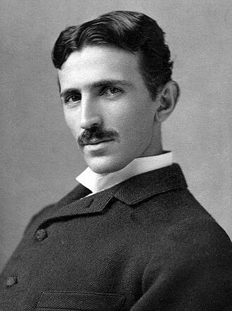

| Year | Event |
|---|---|
| 1856 | Born in Smiljan, Austrian Empire |
| 1884 | Moved to the United States |
| 1887 | Developed AC induction motor |
| 1893 | Demonstrated wireless lighting |
| 1901 | Started building Wardenclyffe Tower |
| 1943 | Died in New York City |
Famous Quote
"If you want to find the secrets of the universe, think in terms of energy, frequency and vibration." Learn More